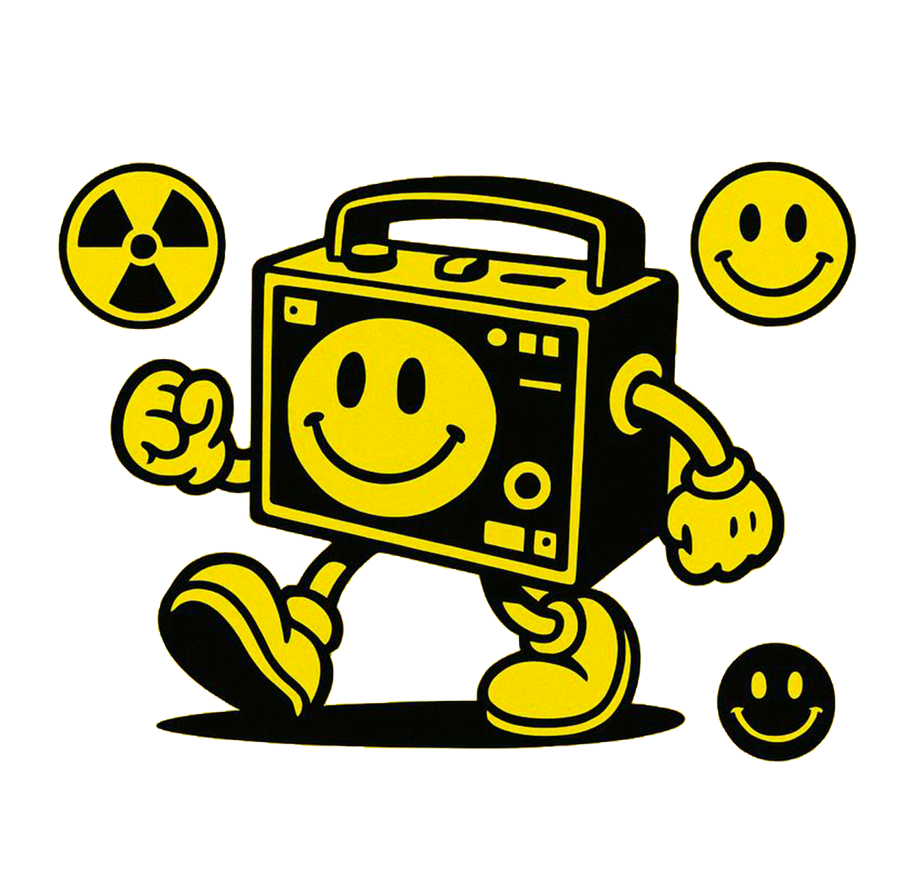

LATEST
EPISODE

VIDEO
ARCHIVE


ABOUT
TSS
Transcendence Sonic Sessions is a radio project dedicated to House,
Progressive House, Neo Trance, UK Garage and underground electronic music.
Each episode explores melodic journeys, rave culture influences,
club sounds and contemporary electronic aesthetics curated by Brzhezovsky.